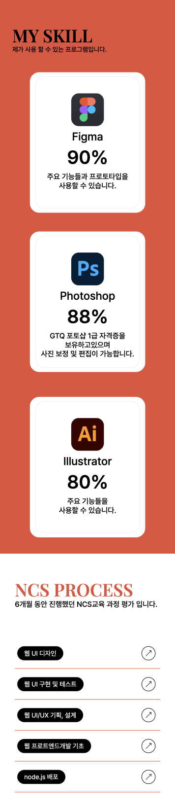

저의 포트폴리오 UI/UX 기획서입니다.
컨셉 기획, 디자인 기획, 제작으로 구성되어있습니다.
So는 제 이름의 한 글자이기도 하지만 영어 뜻은 그래서라는 뜻입니다.
그래서의 의미는 앞의 내용이 뒤의 사실의 원인·근거·조건이 되는 부사로
‘포트폴리오의 근거가 되는’이라는 의미를 담고있습니다.
step.01
나를 주제로 브레인 스토밍을 진행하였습니다.
step.02
중요한 키워드를 적은 후 관련성 있는 주제끼리 묶어
그룹핑을 진행하여 아이디어를 구체화 하였습니다.
1
2
3
step.03
저에 대한 키워드를 도출하고 컨셉을 구체화 하였습니다.
PASSION & YOUNG
그리고
SO-YOUNG
step.04
사이트를 편리하게 이용하고 원하는 정보를 얻을 수 있도록
사용자 요구 분석하였습니다.
사용자가 원하는 포트폴리오는 무엇인가?
인덱스에서 전체적인 내용을 확인 가능한가
인덱스만 보고도 어떤 사람인지,어떤 능력을 가지고 있는지 알 수 있도록 설계
디자인이 트렌디한가
해외사이트를 레퍼런스로 참고
작업했던 결과물을 확인 할 수 있는가
결과물들을 분류하여정확하고 편리하게 볼 수 있도록 페이지 구성
사용자가 편리하게 사용 할 수 있는가?
header를 상단에 고정시켜
언제든 다른 페이지로 이동 할 수 있도록 설계
각 페이지 오른쪽에 사용자의 위치를
표시하여 자신의 위치를 확인 할수있도록 함
top
footer에 top버튼을 만들어
상단으로 바로 갈 수 있도록 설계
button
button
인덱스 페이지에서도
작업물들을 볼수있도록 버튼 제작
step.01
정보구조도를 작성하여 포트폴리오의 메뉴를 구성하였습니다.
PORTFOLIO
HOME
main
visual 영상
about intro
works intro
hobby intro
contact(footer)
ABOUT
visual 영상
자기소개
timeline
hobby
contact(footer)
WORKS
ncs process
UI/UX process
clone coding
contact(footer)
PORTFOLIO PROCESS
brainstoming
affinity diagram
keyword and concept
user requirement analysis
information architecture
reference research
design style
idea sketch
storyboard
prototype
contact(footer)
step.02
컨셉에 맞는 레퍼런스를 리서치 했습니다.
Index page
index페이지의 전체적인 구조와 색상을 참고하였습니다.
스크롤반응으로 비디오가 바뀌고 비디오가 끝난 뒤
비디오가 확대되면서 about intro가 시작됩니다.
Index skill
index skill부분을 참고하였습니다.
스크롤반응이 가로로 진행되며 이동 시 이미지가 위아래로 움직입니다.
Index hobby
index hobby부분을 참고하였습니다.
title은 가운데 픽스되어있고 취미의 주제가 변경될때 제목이 변경됩니다.
Contact
스크롤 반응으로 배경과 글자 색이 바뀌고
중간에 있는 글자가 가로슬라이드로 무한재생됩니다.
About timeline
sub페이지 about timeline부분에 구조와 모션을 참고하였습니다.
About hobby
sub페이지 about hobby부분에 구조와 모션을 참고하였습니다.
사진이 가운데 몰려있다가 스크롤 반응에 따라
안에서 밖으로 이동하면서 사진의 크기가 커집니다.
Works
sub페이지 works 구조를 참고하였습니다.
Portfolio process
sub페이지 portfolio process부분에 구조 참고하였습니다.
step.03
열정과 YOUNG를 나타내는 빨간계열의 색을 사용하였으며
폰트는 깔끔한 Pretendard와 영문폰트 Playfair Display를 사용하였습니다.
Color
Font
Pretendard
Pretendard
Pretendard
Playfair Display
Playfair Display
Playfair Display
step.01
index page
visual
컨셉을 보여주는 색, 문구를 사용
스크롤을 내리면 가운데를 기준으로 이름이 작아지고 다음섹션이 커지면서 나타남
video
섹션이 나타날때 가운데에서 작았다가 커지면서 나타남
스크롤을 내리면 about, works, portfolio순으로 선택되면서 비디오가 같이 변경됨
about, works, portfolio가 선택될 때 폰트와 색이 변경되고 밑줄이 나타남
모든 비디오가 끝나면 비디오 부분이 커지면서 다음 섹션이 나타남
about intro
흑백 전신 사진이 배경으로 함
섹션이 fullpage가 됐을 때 자기소개와 배경사진의 얼굴까지 보임
간단한 자기소개와 개인정보(인적사항, 프로필, 교육, 스킬)를 작성
중간에 PROFILE을 크게 적어 포인트를 줌
about intro(keyword)
전 섹션이 끝나고 배경색이 자연스럽게 변경됨
가운데 이름이 나오고 스크롤에 따라 키워드들이 두세개 씩 나타남
말풍선은 그림자 효과를 넣어 배경과 구분
키워드를 호버하면 영어가 한글로 변경
이름에는 영어폰트와 컬러를 넣어 포인트를 줌
skill
사용할 수 있는 프로그램 능력치를 퍼센트로 보여줌
각 요소들이 지그재그로 배열되고 가로스크롤로 반응
카드형식으로 아이콘, 텍스트, 숫자로 작성
중요한 부분은 폰트크기와 두께로 강조함
works intro(ncs process)
NSC 결과물을 표 형식으로 보여줌
제목, 내용, 날짜를 폰트크기와 두께로 구분
버튼을 만들어 결과물을 바로 확인 할 수있도록 제작
리스트를 호버하면 작업물을 이미지로 보일 수 있도록 함(커서움직임에따라 이동)
버튼은 호버 시 배경이 검은색으로 나타나고 화살표가 view로 변경 됨
works intro
works 페이지의 내용을 간략하게 보여줌
왼쪽에 title이 고정되고 오른쪽에 요소들만 스크롤반응 함
title 옆에 반응형 버튼을 만들어 결과물을 확인 할 수 있도록 함
결과물 5개정도만 미리보기로 보여줌
요소의 img는 제작했던 결과물의 사진 사용
more버튼을 넣어 바로 works페이지가 나올 수 있도록 함
motto
나의 모토를 검은 배경에 하얀 글씨로 나타냄
글자에 애니메이션을 넣어 제작함
hobby
내가 좋아하는 것들을 사진으로 보여줌
취미의 title은 가운데 고정되고 사진만 위로 올라감
취미의 주제가 바뀌면 가운데 title도 변경됨
사진 크기는 각각 다르게 두어 지루하지 않도록 함
contact
전섹션이 끝나고 배경색이 자연스럽게 변경됨
핸드폰번호와 이메일 주소를 크게 넣어 강조함
번호는 가로로 무한으로 재생되도록 함
하단에 top 버튼을 만들어 바로 상단으로 갈 수 있도록 함
about page
visual
일상비디오로 시작
비디오가 작아져 있다가 스크롤에 따라 제자리오면 서 확대 됨
비디오 뒤에는 모토가 무한슬라이드로 움직임
왼쪽 가운데 ABOUT표시를 하여 사용자가 어느 페이지에 있는지 확인할 수 있도록 함
about me
왼쪽에는 사진, 오른쪽에는 나에 대한 소개를 텍스트로 작성
처음에는 나의 포부, 다음으로 인적사항으로 구성
인적사항이 나올 때는 왼쪽에 사진이 고정되고 텍스트만 변경됨
인적사항에는 profile, career, education, license, skill로 구성
timeline
나의 삶을 시간순으로 보여 줌
요소 하나씩 나올 수 있도록 애니메이션 구성
사진 옆 세로 선은 스크롤에 반응하여 위에서 아래로 스르르 보여지도록 제작
hobby
전 섹션이 끝나고 배경색이 자연스럽게 변경됨
취미를 다섯개의 사진으로 보여줌
title은 왼쪽에 고정되고 오른쪽 섹션만 위라애로 움직이도록 구성
취미 title이 hobby와 위치가 같아질 때
title쪽으로 모여있던 사진들이 바깥쪽으로 펴지면서 사진들이 크게 보여짐
works page
visual
text에 아래서 위로 올라오는 애니메이션 효과 적용
다음섹션이 나올때 visual페이지 위로 올라오면서 나타남
UI/UX
UI/UX작업물 3개를 각각의 페이지(3페이지)로 보여줌
다음페이지가 보여질 때 전 섹션 위로 올라가도록 제작
앱 리뉴얼, 웹 리뉴얼, 포트폴리오 제작으로 구성
왼쪽에는 내용, 오른쪽에는 목업사진과 결과물 사진으로 구성
기획서 및 반응형 버튼을 통해서 상세내용을 볼 수 있도록 함
(app 리뉴얼은 프로토타입을 넣어 앱 구현 동영상을 볼 수 있도록 함)
3페이지의 배경을 다르게 하여 구분할 수 있도록 함
ncs process
ncs process 작업물로 구성
총 10개의 작업물 화면에는 3개의 작업물이 보일 수 있도록 구성
화살표를 눌러 다음, 전 작업물을 확인할 수 있도록 함
이미지를 누르면 ppt(pdf)파일이 나올 수있오록 함
가운데 오는 요소를 양옆 요소보다 크게 보여줌
상단 가운데 WORKS표시
모든 비디오가 끝나면 비디오 부분이 커지면서 다음 섹션이 나타남
clone coding
클론코딩했던 작업물을 보여줌
사진을 누르면 상세페이지(design system)가 나오도록 제작
사진을 호버하면 사진이 어두어지고 view텍스트가 가운데 나타남
사진 하단에는 반응형 버튼을 만들어 상세페이지를 들어가지 않아도
반응형 페이지를 볼 수 있도록 함
버튼을 호버하면 배경이 하얀색, 글씨는 검은색으로 변경됨
portfolio process page
visual
So라는 문자로 포트폴리오 프로세스의 기획서 시작을 알림
문자 옆에는 프로세스의 구성와 so의 담긴 의미를 설명
상단 가운데 PORTFOLIO표시
concept
visual페이지가 끝나고 자연스럽게 배경이 하얀색으로 변경됨
브레인스토밍, 어피니티다이어그램, 키워드및 컨셉으로 구성
좌우 지그재그로 요소들을 배치
스크롤반응으로 위래서 아래로 스르르 나타남
title아래 간단한 설명을 작성
두번째 섹션부터 왼쪽 가운데 PORTFOLIO를 표시
concept_brainstoming, affinity diagram
진행했던 과정을 사진으로 보여줌
사진에 그림자를 넣어 배경과 구분
어피니티 다이어그램 3단계로 구성
concept_keyword and concept
도출된 키워드를 나열하고 컨셉으로 정한 텍스트를 강조하여 보여줌
강조된 글씨가 이동하면서 영어로 바뀌고 그리고와 SO-YOUNG 나타남
concept_user requirement analysist
1단계 2단계로 나눠 보여줌
질문에 대답하는 형식으로 작성
예시를 보여줄 수있는 이미지나 버튼모양을 사용함
design
concept섹션이 끝나고 배경색(검정)과 글자(흰색)가 자연스럽게 변경됨
정보구조도, 레퍼런스, 디자인스타일로 구성
스크롤반응으로 요소들이 아래에서 위로 나타남
design_reference
안의 요소들이 지그재그로 배열
레퍼런스로 참고한 사이트를 캡쳐해서 사용
레퍼런스를 참고하여 작성한 아이디어스케지를 참고한 사이트사진 맨앞에 보여줌
사진 옆에는 어떤 부분에 참고하였는지 작성
design_design style
사용했던 컬러와 폰트를 작성
검은색 컬러에 하얀색 그림자를 넣어 배경과 구분 될 수 있도록 함
production
design섹션이 끝나면 자연스럽게 배경(흰색)과 글자(검정)가 변경 됨
아이디어스케치, 스토리보드, 프로토타입으로 구성
production_storyboard
최종 시안 옆에 설명을 자세하게 적어서 보여줌
모든페이지(index, about, works, portfolio)를 작성함
페이지의 구성, 효과 등을 자세하게 작성
사진에 그림자 효과를 넣어 배경과 구분 될 수 있도록 함
production_prototype
최종시안을 풀페이지로 보여줌
계단구조로 사진을 나열
사진에 그림자 효과를 넣어 배경과 구분 될 수 있도록 함
tablet, moblie모드로 보여줌
step.02
Tablet Mode
mobile Mode
